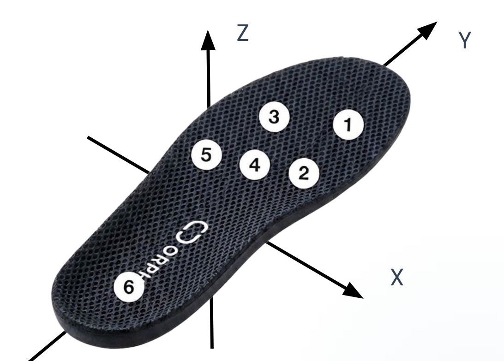
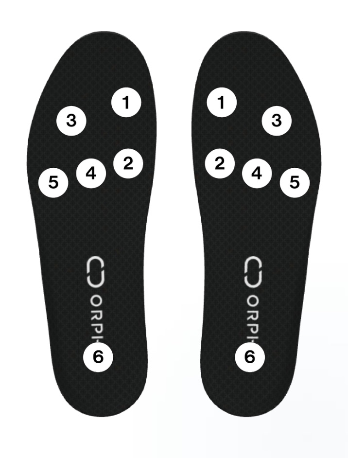

ORPHE INSOLE サンプルデータ
歩行と走行のサンプルデータ
通常歩行、病的歩行の模擬8種、トレッドミル走行3速度。左右のインソールの加速度・角速度・足底圧を、撮影動画と時刻をそろえて見られます。CSV・ARKit骨格・動画は、まとめても試技ごとにもダウンロードできます。
ダウンロードする前に利用条件をご確認ください。データの再配布はできません。
12 試技
通常歩行・病的歩行の模擬8種・走行3速度
208.3 Hz
左右の加速度・角速度・クォータニオン・6ch圧力
ARKit 30 fps
91関節の骨格と撮影動画（顔はモザイク処理）
時刻合わせ済み
冒頭のジャンプで左右と動画のずれを補正
試技一覧
12 の試技を、動画と波形で。
歩行はカメラに向かって約5 mの直線歩行、走行はトレッドミルです。各試技の冒頭に両脚ジャンプがあります。病的歩行は健常者1名による模擬で、片側性のものは左足を患側としています。
通常歩行
以降の試技と比べるときの基準です。
両側性の病的歩行（模擬）
左右とも同じ動きで模擬しています。小刻み歩行とすくみ足は、パーキンソン病などでみられる歩行障害です。
片側性の病的歩行（模擬・左＝患側）
原因が近いものを隣に並べています。ぶん回し歩行と鶏歩は片麻痺・下垂足による振り出しの障害、トレンデレンブルク歩行とデュシャンヌ歩行は股関節外転筋の筋力低下によるものです。
トレッドミル走行
6 / 9 / 12 km/h。ストライド時間はほぼ一定のまま、歩幅・衝撃・蹴り出しが大きくなります。


ビューア
動画と波形を、同じ時刻で見る。
再生・シーク・グラフのクリックで、動画と波形が連動します。t = 0 は左足のジャンプ着地です。右足と動画は、ジャンプから求めたずれで補正しています。
t = 0.00 s
Space: 再生・停止 / ← →: 1フレーム移動 / グラフをクリック・ドラッグでシーク
通常歩行（5 m）
波形の特徴
- gyroX：接地直後に負（足底が床へ倒れる）→ 立脚中期はほぼ0 → 離地直前に大きな負のピーク（蹴り出し）→ 遊脚中期に正のピーク（つま先が上がる）
- 圧力：踵（6）→ 中足部外側（5）→ つま先外側（3）の順に荷重が移る。合計は踵接地と蹴り出しの二峰性
- 加速度：接地時に accZ のピーク、遊脚終期に accY が負（接地前の減速）
アプリ指標から読めること
- 歩幅1.3 m・速度1.1〜1.2 m/s → フレイルの目安（1.0 m/s）を上回る、通常の歩行速度
- 立脚64% → 一般的な値（60%）に近い
- 接地角 −15〜−18°・離地角 −68° → 踵から着地し、蹴り出しで踵をしっかり持ち上げている
- 足上げ高さ15 cm → 十分なクリアランス
小刻み歩行
波形の特徴
- gyroX の振幅が小さく、蹴り出し・遊脚のピークがなだらか
- 接地時に accY が大きく負に振れる（すり足のような接地）
- 圧力は全体に小さく、踵にほとんど荷重がかからない。左右とも同じ動きで、左右差は小さい
アプリ指標から読めること
- 歩幅0.31〜0.32 m（通常の約1/4）・速度約0.4 m/s → 歩数は多いが前に進まない
- ストライド時間0.75〜0.79 s・遊脚時間0.24 s（通常0.39 s）→ 一歩ごとの振り出しが短く速い
- 足上げ高さ6 cm（通常15 cm）・離地角 −27〜−29°（通常 −68°）→ 蹴り出しで踵が上がらず、すり足に近い
- 接地角0° → 踵からではなく足底全体で着地している
すくみ足
波形の特徴
- 歩き出そうとした直後の約4秒間（t ≈ 4.8〜8.6 s、グラフの網掛け）、前に進めずその場で小刻みに足踏みする。角速度は ±50 dps 程度の細かい振動が続くだけで、蹴り出し・振り出しの波形が出ない
- すくみの間も両足に荷重が残り、主につま先外側（3）と中足部外側（5）で支える。踵（6）にはほとんど荷重がかからず、前足部に体重が乗った状態
- すくみが解けると数歩だけ大きな gyroX の波形が現れ、接地のたびに accY が大きく負に振れる
アプリ指標から読めること
- すくみを含む最初の1歩が、ストライド時間約2.4 s・立脚88%・速度0.2 m/s として記録される → アプリ上は「極端に長く遅い1歩」として表れる
- すくみが解けた後：ストライド時間0.85〜0.87 s、歩幅0.45〜0.72 m、接地角0〜+1°、離地角 −29〜−47° → 踵接地がなく、通常より短く浅い歩き方
- 足上げ高さ5〜10 cm（通常15 cm）、接地時加速度19〜20 m/s²（通常26〜32）→ 足を低く上げ、そっと着地している
- 解析できる歩数が少ない（左右各1〜2歩）ため、値は参考値
ハサミ足
波形の特徴
- 両足とも中足部外側（5）中心の荷重で、踵への荷重が小さい
- 遊脚期の角速度がストライドごとにばらつく
アプリ指標から読めること
- 遊脚幅：左17 cm・右9 cm（通常2 cm）→ 両足とも遊脚が側方へ大きくぶれる
- 足向角：+28° / +13°（通常 −14〜−16°）→ 両足とも足部の向きが通常から大きく変わっている
- 接地角 +9〜+11° → 両足ともつま先側から着地している
- 立脚75〜78%（通常64%）→ 両足で支える時間が長く、慎重な歩き方になっている
- 接地時加速度：左68 m/s²・右29 m/s² → 同じ動きのつもりでも、左の着地衝撃が強く左右差が出ている
ぶん回し歩行
波形の特徴
- 患側：遊脚中の gyroX がほぼ平坦で、足関節を動かさずに振り出す
- 患側：踵（6）だけで支え、前足部への荷重移動（蹴り出し）がない
アプリ指標から読めること
- 遊脚幅：患側26 cm（健側1 cm、通常2 cm）→ 脚を外側に回して振り出している。ぶん回し歩行を最もよく表す指標
- 立脚：患側44%・健側73%、遊脚時間：患側0.86 s（健側0.42 s）→ 患側で支える時間が短く、振り出しに時間がかかる。そのぶん健側で長く支えている
- 離地角：患側 −13°（健側 −30°）、蹴り出し角速度：患側 −194 dps（健側 −357 dps）→ 足関節で蹴り出さず、脚全体を持ち上げて離地している
- 接地時加速度：患側94 m/s²（健側45、通常26〜32）→ 足を叩きつけるように着地している
鶏歩（下垂足）
波形の特徴
- 患側：つま先外側（3）が先に応答し、その後に踵（6）へ荷重が乗る
- 患側：接地直後の gyroX が正（前足部が着いたあと踵が落ちる）。遊脚中はほぼ平坦
アプリ指標から読めること
- 接地角：患側 +18°（通常 −15〜−18°）→ つま先が下がったまま前足部から着地している。下垂足による鶏歩を最もよく表す指標
- 立脚：患側50%・健側78%、遊脚時間：患側0.71 s（健側0.32 s）→ 患側は振り出しに時間がかかり、健側で長く支えている
- 離地角：患側 −22°（健側 −52°）、蹴り出し角速度：患側 −183 dps（健側 −390 dps）→ 患側の蹴り出しが弱い
- 遊脚速度：患側1.3 m/s（健側2.4 m/s）→ 患側の振り出しがゆっくり
逃避性歩行
波形の特徴
- 患側の立脚が短い（体重を乗せている時間を短くしている）
- 患側の gyroX の振幅が小さく、蹴り出しが弱い
アプリ指標から読めること
- 立脚：患側60%・健側71%、遊脚時間：患側0.58 s（健側0.40 s）→ 痛みのある患側に体重を乗せる時間を短くしている
- 蹴り出し角速度：患側 −162 dps（健側 −387 dps）→ 患側では強く蹴り出していない
- 足上げ高さ：患側5 cm（健側9 cm）、遊脚速度：患側1.2 m/s（健側1.8 m/s）→ 患側は低く、ゆっくり振り出している
トレンデレンブルク歩行
波形の特徴
- 患側：中足部外側（5）とつま先外側（3）で主に支え、踵にはほとんど荷重がかからない（外側縁での支持）
- 患側：立脚中の accX に重力成分のオフセットが出る（足部が外側に傾いている）
アプリ指標から読めること
- 時間指標は左右ほぼ同じ（立脚66 / 65%、遊脚0.55 / 0.54 s）→ 時間的な左右差は小さい。本来の異常は骨盤・体幹の傾きにある
- 接地時加速度：患側18 m/s²（健側31）→ 患側はそっと足を下ろしている
- 離地角：患側 −46°（健側 −36°）→ 蹴り出しは保たれている
- アプリ指標だけでは特徴が出にくく、足底圧の外側荷重と合わせて見るとよい。骨盤の傾き（本来の主徴）は足部センサーには直接表れにくい
デュシャンヌ歩行
波形の特徴
- ほかの片側性の病的歩行とは逆に、患側の立脚が長い
- 健側の遊脚期の gyroX が非常に小さい
アプリ指標から読めること
- 立脚：患側72%・健側54%、遊脚時間：健側0.76 s（患側0.46 s）→ 患側で長く支え、その間に健側をゆっくり振り出している
- 健側の遊脚速度1.2 m/s（患側2.3 m/s）、蹴り出し角速度 −213 dps（患側 −294 dps）→ 健側の振り出しが小さく遅い
- 足向角：健側 −22°（患側 −11°）→ 健側の足部の向きが変わっている
- 体幹の側方傾斜（本来の主徴）は足部センサーには直接表れにくい
トレッドミル走行 6 km/h
波形の特徴
- 速度が上がると接地時間が短くなり、gyroX・加速度・圧力合計のピークが大きくなる
- 踵（6）から接地して前足部へ素早く移る。速度が上がるほど前足部（1・3）の荷重が増える
- 歩行に比べ、センサー1・2・4も応答する
アプリ指標から読めること
- 6 → 9 → 12 km/h で歩幅1.1 → 1.6 → 2.1 m。ストライド時間は0.73〜0.75 s でほぼ一定
- 立脚37 → 34 → 30%、離地角 −43〜−50 → −57〜−62°、足上げ高さ21〜25 → 46〜51 cm
- 接地時加速度70〜78 → 83〜115 m/s²、蹴り出し角速度 −426〜−430 → −752〜−811 dps、遊脚速度3.5〜3.7 → 5.9〜6.0 m/s
- トレッドミル上の歩幅・速度は、ベルト速度（1.67 / 2.50 / 3.33 m/s）より9〜16% 低く出る
トレッドミル走行 9 km/h
波形の特徴
- 速度が上がると接地時間が短くなり、gyroX・加速度・圧力合計のピークが大きくなる
- 踵（6）から接地して前足部へ素早く移る。速度が上がるほど前足部（1・3）の荷重が増える
- 歩行に比べ、センサー1・2・4も応答する
アプリ指標から読めること
- 6 → 9 → 12 km/h で歩幅1.1 → 1.6 → 2.1 m。ストライド時間は0.73〜0.75 s でほぼ一定
- 立脚37 → 34 → 30%、離地角 −43〜−50 → −57〜−62°、足上げ高さ21〜25 → 46〜51 cm
- 接地時加速度70〜78 → 83〜115 m/s²、蹴り出し角速度 −426〜−430 → −752〜−811 dps、遊脚速度3.5〜3.7 → 5.9〜6.0 m/s
- トレッドミル上の歩幅・速度は、ベルト速度（1.67 / 2.50 / 3.33 m/s）より9〜16% 低く出る
トレッドミル走行 12 km/h
波形の特徴
- 速度が上がると接地時間が短くなり、gyroX・加速度・圧力合計のピークが大きくなる
- 踵（6）から接地して前足部へ素早く移る。速度が上がるほど前足部（1・3）の荷重が増える
- 歩行に比べ、センサー1・2・4も応答する
アプリ指標から読めること
- 6 → 9 → 12 km/h で歩幅1.1 → 1.6 → 2.1 m。ストライド時間は0.73〜0.75 s でほぼ一定
- 立脚37 → 34 → 30%、離地角 −43〜−50 → −57〜−62°、足上げ高さ21〜25 → 46〜51 cm
- 接地時加速度70〜78 → 83〜115 m/s²、蹴り出し角速度 −426〜−430 → −752〜−811 dps、遊脚速度3.5〜3.7 → 5.9〜6.0 m/s
- トレッドミル上の歩幅・速度は、ベルト速度（1.67 / 2.50 / 3.33 m/s）より9〜16% 低く出る
データセット
何が入っているか、どう時刻を合わせるか。
ZIP には試技ごとのフォルダがあり、センサー値・アプリの歩容解析・ARKit骨格・動画が入っています。同じ説明を README.md として同梱しています。
- 計測日
- 2026年10月21日
- デバイス
- ORPHE INSOLE β（左右）。加速度 [G]・角速度 [dps]・クォータニオン・6ch圧力 [N]、208.3 Hz
- カメラ
- iPhone ARKit ボディトラッキング（約30 fps、91関節）と撮影動画。顔にはモザイクを掛けています
- 被験者
- 健常者1名による模擬。片側性の病的歩行は左足を患側として模擬し、小刻み歩行・すくみ足・ハサミ足は左右とも同じ動きで模擬しています
- 試技
- 歩行はカメラに向かって約5 mの直線歩行、走行はトレッドミル。各試技の冒頭に両脚ジャンプ（時刻合わせ用）
| ファイル | 内容 |
|---|---|
sensor-left.csvsensor-right.csv |
センサー値。timestamp [s, UNIX時刻]、accX/Y/Z [G]、gyroX/Y/Z [dps]、quatW/X/Y/Z、press1〜press6 [N] |
gait_analysis_left_detailed.csvgait_analysis_right_detailed.csv |
アプリが算出した1ストライドごとの歩容指標 |
landmarks.json |
ARKit骨格（カメラ原点からの3D関節位置 [m]、約30 fps） |
video.mp4poster.jpg |
動画とサムネイル（顔にモザイク処理済み） |
trial.jsontrials.csv |
試技名と時刻合わせの値。trials.csv は全試技を1表にしたもの（一括 ZIP のみ） |
座標系

右手系・Z上向きで左右共通です。Y = つま先方向、X = つま先に向かって右、Z = 上（静止時 accZ ≈ +1 G）。+X は左足では内側、右足では外側になるため、左右を解剖学的にそろえるときは左足の accX・gyroY・gyroZ の符号を反転してください。
圧力センサー

1 つま先内側、2 母趾球内側、3 つま先外側、4 中足部中央、5 中足部外側、6 踵。約9 N未満は0になり、静止立位の合計も10〜20 N程度です。絶対荷重ではなく、荷重の分布とタイミングとして見てください。本データではセンサー4がほぼ応答していません。
時刻合わせ
左右と動画を、冒頭のジャンプでそろえる
左右のインソールと動画は別々の時計で記録されています。左右はジャンプの着地衝撃の相互相関で右足を補正し（ずれは19〜276 ms、精度の目安 ±10 ms）、動画はARKit骨格の腰の上下動から求めた着地との差（0.27〜0.36 s、精度の目安 ±1フレーム）で補正します。
t_left = timestamp − tZeroUnix
t_right = timestamp − rightOffsetMs / 1000 − tZeroUnix
video = t + (tZeroUnix − videoStartUnix) + videoOffsetSアプリ算出の歩行指標
試技どうしを、指標で比べる。
gait_analysis_*_detailed.csv の定常区間の中央値です（左 / 右）。行をクリックすると、その試技をビューアで開きます。
すくみ足は、すくみが解けた後の1〜2歩だけの値です（参考値）。接地角は負が踵から、正がつま先からの接地です。接地・離地イベントの列は順に initialContactAccelerationMax.z、toeOffAngularVelocityMin.x、swingPhaseStrideVelocityMax.y です。
時間・距離
- ストライド時間：同じ足が接地してから次に接地するまでの時間。歩調の速さを表す
- 立脚 / 遊脚：1ストライドに占める接地・非接地の割合。一般的な歩行では立脚60%・遊脚40%（うち両脚支持20%）で、フレイルでは両脚支持が約30%に増えると報告されている [Schwenk M, 2014]。患側の立脚が短く遊脚が長いときは、患側で体重を支える時間を避けている
- 歩幅（stride）：同じ足の接地間の距離（通常歩行で約1.3 m）。左右交互の一歩（平均約70 cm [Götz-Neumann K, 2005]）のおよそ2倍
- 速度：通常歩行速度 < 1.0 m/s はフレイル・サルコペニアの診断基準の一つ [Satake S & Arai H, 2020]、< 0.7 m/s は転倒リスクの高さと関連する [Shimada H, 2009]
足部の動き
- 接地角：着地時の足底と路面の角度。負は踵から（通常 −15〜−18°）、0付近は足底全体、正はつま先からの接地
- 離地角：足が離れるときの角度。絶対値が大きいほど、蹴り出しで踵がしっかり持ち上がっている（通常 −68°）
- 足上げ高さ：遊脚期にインソールが上がる最大の高さ。つまずきにくさの目安で、小さいとすり足になりやすい（通常15 cm）
- 遊脚幅：遊脚期の側方のぶれ（正は外側）。ぶん回し歩行やハサミ足で増える
- 足向角：進行方向に対するつま先の角度。符号の定義を確認中のため、条件間・左右の変化量として見る
接地・離地イベント
- 接地時加速度：着地前後のZ方向加速度の最大値。大きいほど着地の衝撃が強い（通常26〜32 m/s²）
- 蹴り出し角速度：離地前後の gyroX の最小値（負 = つま先が下がる向き）。絶対値が大きいほど勢いよく蹴り出している（通常 −350〜−505 dps）
- 遊脚速度：遊脚期の前方向の足部速度の最大値。振り出しの速さを表す（通常2.9〜3.9 m/s）
利用条件
使う前に、ご確認ください。
本データの著作権は ORPHE Inc. に帰属します。同じ条件を ZIP 内の README.md にも記載しています。
- 使える範囲：教育・ワークショップ、大学・研究機関などでの非商用研究、個人制作、試作・社内検証に、無償で使えます
- 商用利用：有料の製品・サービスの開発や評価に使う場合は、事前に ORPHE にご相談ください
- 再配布の禁止：データそのもの（CSV・JSON・動画・画像）を再配布しないでください。共有するときは、このページへのリンクを案内してください。データから作った図表・統計値・解析結果は、論文や発表に使えます
- 禁止事項：被験者を特定しようとすること、モザイクを外したり元の映像を復元しようとしたりすること、動画や画像を人物の識別や生成モデルの学習に使うこと
- 出典の表示：論文・発表・公開物で使うときは「ORPHE INSOLE サンプルデータ（ORPHE Inc., 2026）」とこのページの URL を記載してください
- 医療用途ではありません：模擬による参考データで、臨床の基準値ではありません。ORPHE INSOLE は医療機器ではなく、診断・治療の根拠には使えません
- 無保証・変更：データは現状のまま提供し、正確性を保証しません。予告なく内容を変更したり、公開を停止したりすることがあります
ご注意
健常者1名による模擬データです。
病的歩行の臨床的な代表値ではなく、診断には使えません。アプリ出力の landingForce は全行0（未算出）、足向角（footAngle）の符号の定義は確認中です。